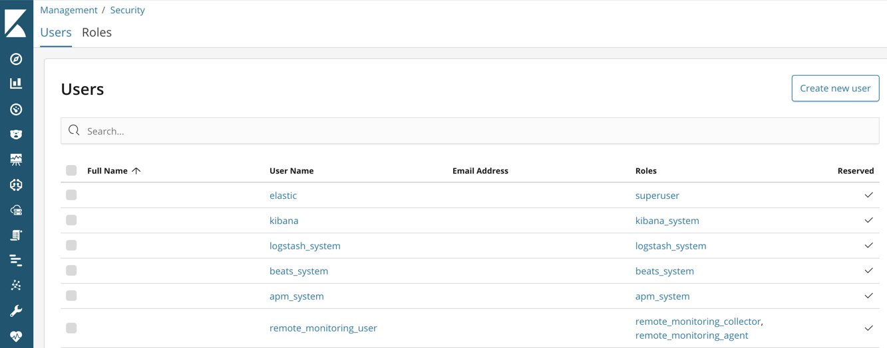
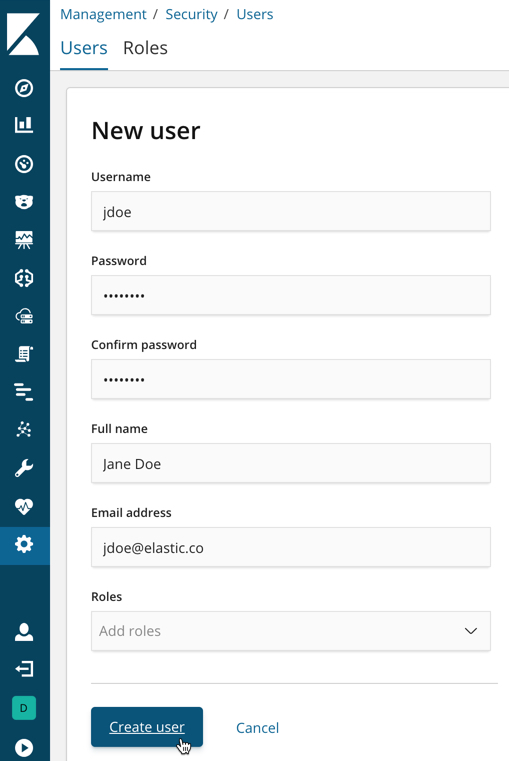

原英文版地址: https://www.elastic.co/guide/en/elasticsearch/reference/7.7/get-started-users.html, 原文档版权归 www.elastic.co 所有
本地英文版地址: ../en/get-started-users.html
本地英文版地址: ../en/get-started-users.html
IMPORTANT: No additional bug fixes or documentation updates
will be released for this version. For the latest information, see the
current release documentation.
Create usersedit
Let’s create two users in the native realm.
-
Log in to Kibana with the
elasticbuilt-in user. -
Go to the Management / Security / Users page:
In this example, you can see a list of built-in users.
-
Click Create new user. For example, create a user for yourself:
You’ll notice that when you create a user, you can assign it a role. Don’t choose a role yet—we’ll come back to that in subsequent steps.
-
Click Create new user and create a
logstash_internaluser.In Getting started with the Elastic Stack, you configured Logstash to listen for Metricbeat input and to send the events to Elasticsearch. You therefore need to create a user that Logstash can use to communicate with Elasticsearch. For example: